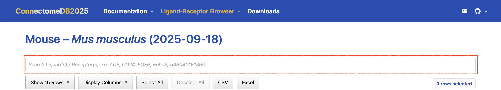

CDB2025 User Guide: Gene Search
CDB2025 User Guide: Gene Search
Purpose
The Gene Search feature in ConnectomeDB allows you to explore ligand–receptor interactions by querying specific genes. This tool is designed to help researchers quickly identify relevant interactions and their orthologs across different species, facilitating comparative studies and functional analyses. The Flexible multi-gene search allows querying one or more genes to identify ligand–receptor pairs and their orthologs.
How to search for genes
To search for specific genes and their associated ligand–receptor pairs, follow these steps:
Go to the Ligand-Receptor Browser on the navigation menu and choose your target species from the drop-down menu. (See Ortholog Mapping for more details on how to select your model organism.)
Enter gene symbols of interest in the search box at the top of the Pair-list view table. You can input one or more gene symbols (including official symbols, aliases, and old symbols), separated by commas. The search will return ligand–receptor pairs that match any of the specified genes.
- For example, entering “calr,ERBB2” or “CALR, erbb2” will return all ligand–receptor pairs involving either CALR or ERBB2 The search bar is not case sensitive and will match gene symbols regardless of capitalization. In addition, Human gene symbols are appended to the other 13 species tables, so you can search for the ortholog human genes in any species table when available. You can also search using any aliases for the species of interest or its human ortholog.
View the results: The Pair-list view table will display all ligand–receptor pairs that match the specified gene symbols. Each row represents a unique ligand–receptor interaction, with columns providing detailed information about the ligands, receptors, species, and evidence supporting the interaction.
Sort and customize the table: You can sort the results by clicking on the column headers, and customize the view by selecting which columns to display. This allows you to focus on the most relevant information for your research.
Download the results (optional): If you want to download the filtered results, you can do so directly by the following steps:
- Click on the Select All Filtered(XX) button to select all rows that match your search criteria. You can undo this action by clicking the Deselect All) button. If you do not want to select all and only want to download specific rows, you can select them manually by clicking the checkbox in the beginning of each row in the Select column. Use the information XX rows selected on the top right corner of the table to confirm how many rows you have selected. You can also confirm the rows selected at the bottom left corner of the table if there are more than 25 rows and is more convenient to look from bottom of the table.
- Click on either CSV or Excel button depending on your preferred format. Results will be downloaded as a CSV or Excel file containing the selected rows and their associated data. Only displayed columns at the time of download will be included in the downloaded file. If you wish to include additional columns, you can customize the view before downloading.
See the gif below for a demonstration of the search functionality:
Previous: Ortholog Mapping Learn how to select your model organism.
Next: LR Pair Card View Look up genes in the pair list view.